API 用户指南
目录
注册与登录
支持账号密码注册，以及多种第三方 OAuth 一键登录。首次使用请先完成注册。
登录
账号密码登录
- 打开平台首页，点击右上角「登录」按钮，或直接访问
/login。
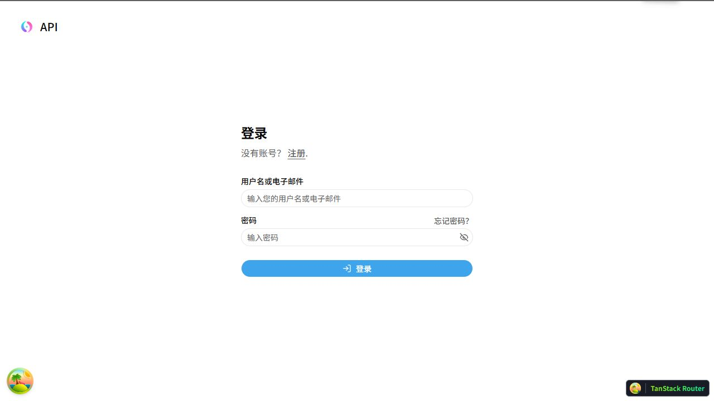
- 在登录页输入用户名和密码，点击「登录」完成登录。
第三方 OAuth 登录
如需使用第三方账号登录，点击页面下方对应平台的图标（GitHub、Discord、LinuxDO 等），跳转至第三方授权页面完成授权后自动登录。
忘记密码
忘记密码时，点击登录页的「忘记密码」链接，输入注册邮箱后系统会发送重置链接，点击链接设置新密码，原密码随即失效。
注册
注册流程
- 在登录页点击「注册」链接，或直接访问
/register。
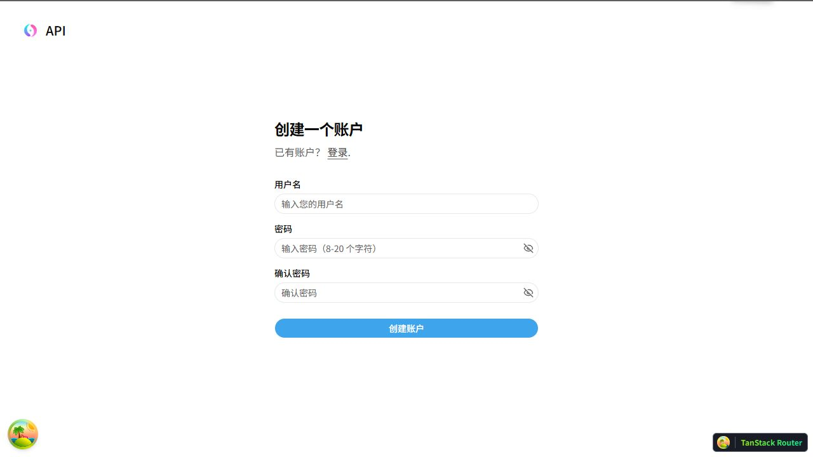
- 填写用户名、密码。
- 填写邮箱地址，点击「发送验证码」，将收到的验证码填入输入框。
- 点击「注册」完成账号创建，注册成功后自动跳转至首页。
个人设置
管理账号基本信息、安全设置和第三方账号绑定。登录后点击右上角头像，在下拉菜单中选择「个人设置」，或直接访问 /console/personal。
基本信息
修改用户名
在用户名输入框中输入新用户名，点击「保存」。
绑定邮箱
填写邮箱地址，点击「发送验证码」，输入验证码后点击「绑定」。
更改密码
依次填写当前密码、新密码、确认新密码，点击「修改密码」。
双因素认证（2FA）
开启 2FA 后，每次登录时除密码外还需输入验证器 App 中的动态码，有效防止账号被盗。
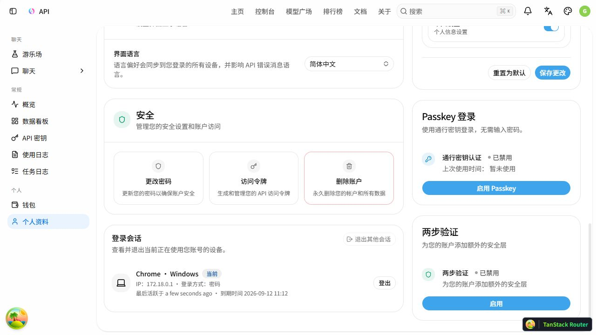
开启 2FA
- 在手机上安装验证器 App（推荐 Google Authenticator 或 Microsoft Authenticator）。
- 在个人设置页找到「双因素认证」区域，点击「开启 2FA」。
- 用验证器 App 扫描页面上显示的二维码，App 中会出现一个 6 位动态码。
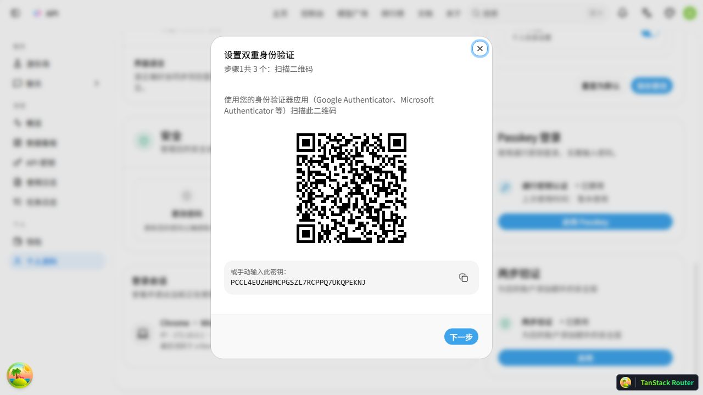
- 将 App 中显示的 6 位动态码填入验证框，点击「确认开启」。
- 系统显示一组备用码，请立即截图或抄写保存，用于无法使用验证器时的紧急登录。
[!WARNING] 备用码只显示一次，关闭弹窗后无法再次查看。丢失备用码且无法使用验证器时，需联系管理员重置。
Passkey 无密码登录
Passkey 支持使用设备指纹、面容识别或硬件安全密钥登录，无需输入密码。

注册 Passkey
- 在个人设置页向下滚动，找到「Passkey」区域。
- 点击「注册 Passkey」按钮。
- 浏览器弹出系统验证提示，按提示完成指纹、面容或安全密钥验证。
- 验证通过后 Passkey 注册完成，下次登录时可直接使用。
第三方账号绑定
将 GitHub、Discord 等第三方账号与当前账号绑定后，可直接用第三方账号登录，无需输入密码。
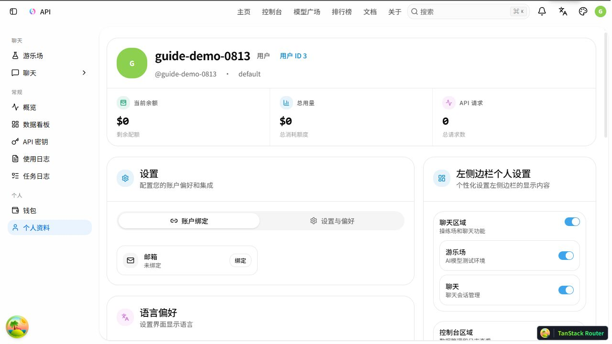
绑定第三方账号
- 在个人设置页向下滚动，找到「第三方账号绑定」区域。
- 点击要绑定的平台对应的「绑定」按钮。
- 页面跳转至该平台的授权页面，登录并点击「授权」。
- 授权完成后自动跳回，绑定状态变为「已绑定」。
可用模型查看
查看当前账户可以调用的所有模型，方便复制模型名称用于 API 调用。
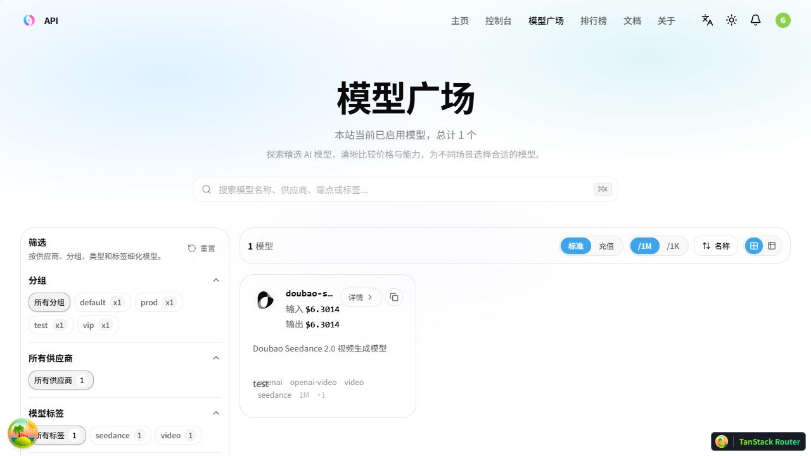
查看和复制模型
- 在个人设置页向下滚动，找到「可用模型」区域。
- 列表展示所有可用模型的名称。
- 点击模型名称即可复制到剪贴板。
- 可在搜索框中输入关键词快速筛选模型。
通知设置
配置接收系统通知的方式，支持邮件和 Webhook 两种方式。
邮件通知
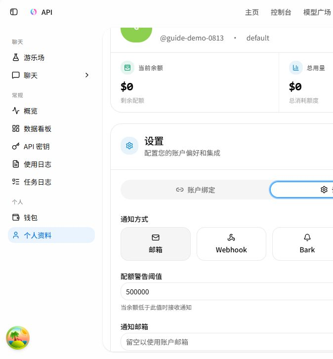
- 在个人设置页找到「通知设置」区域。
- 勾选「启用邮件通知」。
- 选择要接收通知的事件类型：
- 配额不足提醒
- 令牌即将过期
- 系统公告
- 点击「保存」完成配置。
Webhook 通知
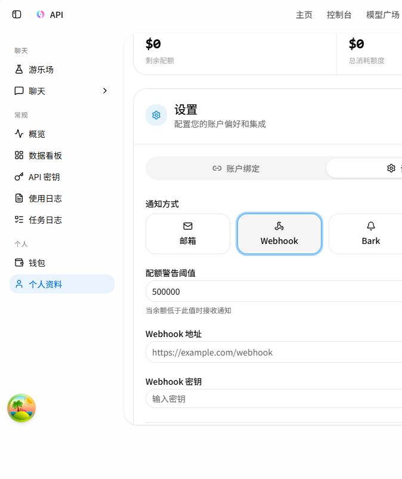
- 在通知设置区域勾选「启用 Webhook」。
- 填写 Webhook URL（接收通知的接口地址）。
- 选择要推送的事件类型。
- 点击「测试」验证 Webhook 是否可用。
- 点击「保存」完成配置。
Webhook 推送的数据格式为 JSON，包含事件类型、时间戳和详细信息。
价格设置
控制是否允许调用未设置价格的模型。

配置价格策略
- 在个人设置页找到「价格设置」区域。
- 选择以下策略之一：
- 拒绝未定价模型：只能调用已设置价格的模型（推荐）。
- 允许未定价模型：可以调用所有模型，未定价模型按默认倍率计费。
- 点击「保存」。
[!WARNING] 允许未定价模型可能导致意外的高额消耗，建议保持默认的「拒绝未定价模型」设置。
IP 记录设置
控制是否在日志中记录 API 调用的来源 IP 地址。
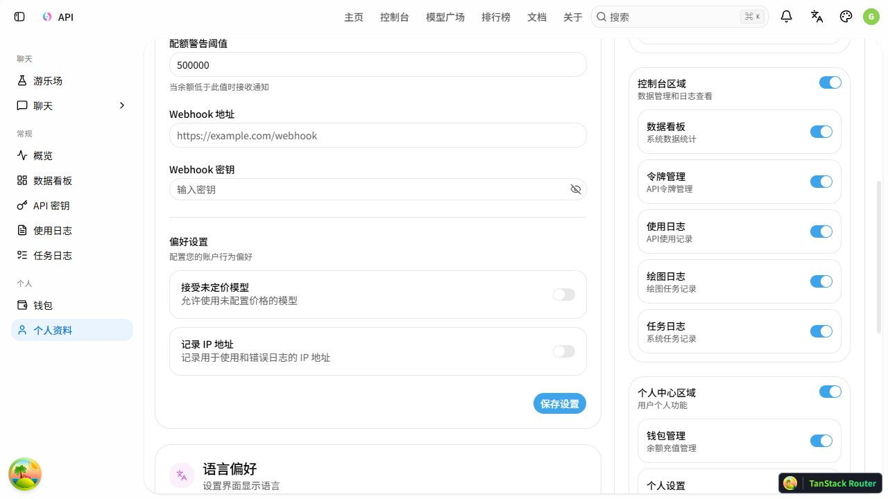
开启 IP 记录
- 在个人设置页找到「IP 记录」区域。
- 勾选「启用 IP 记录」。
- 点击「保存」。
- 开启后，在使用记录页面可以看到每次调用的来源 IP。
IP 记录有助于：
- 监控异常访问
- 排查安全问题
- 分析流量来源
安全设置
重置 API 密钥

如果怀疑 API 密钥泄露，可以重置密钥：
- 在个人设置页找到「安全设置」区域。
- 点击「重置 API 密钥」按钮。
- 确认操作后，系统生成新的密钥。
- 旧密钥立即失效，所有使用旧密钥的令牌需要重新创建。
[!WARNING] 重置 API 密钥后，所有现有令牌将失效，需要重新创建令牌。
令牌管理
令牌是调用 API 的凭证，每个令牌可独立配置权限范围和配额上限。左侧导航点击「令牌」，或直接访问 /console/token。
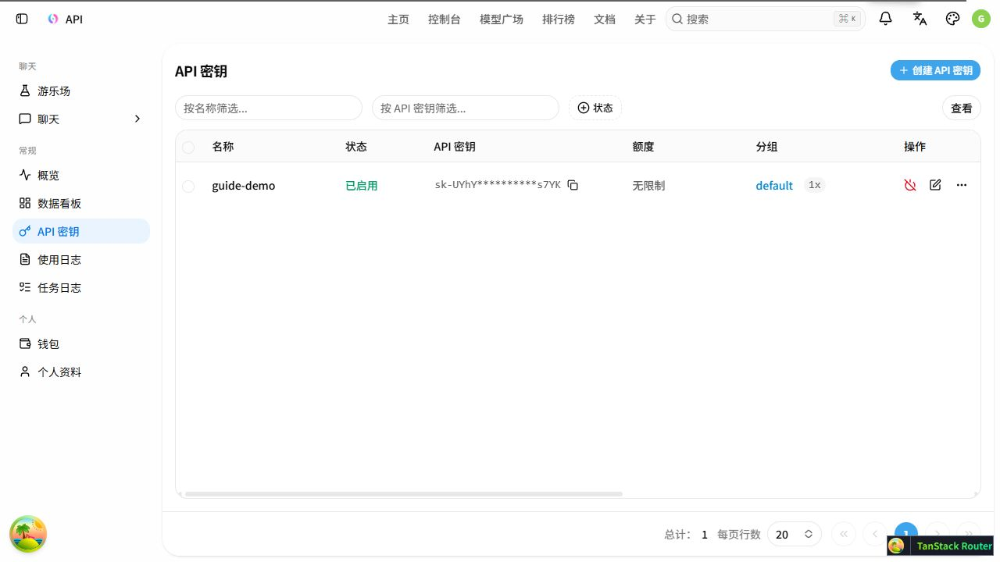
令牌列表展示所有已创建的令牌，包含名称、状态、已用配额、剩余配额、过期时间等信息。
创建令牌
基本配置
- 在令牌列表页点击右上角「创建令牌」按钮，弹出创建弹窗。
- 填写令牌名称（建议按用途命名，如「生产环境」「测试用」）。
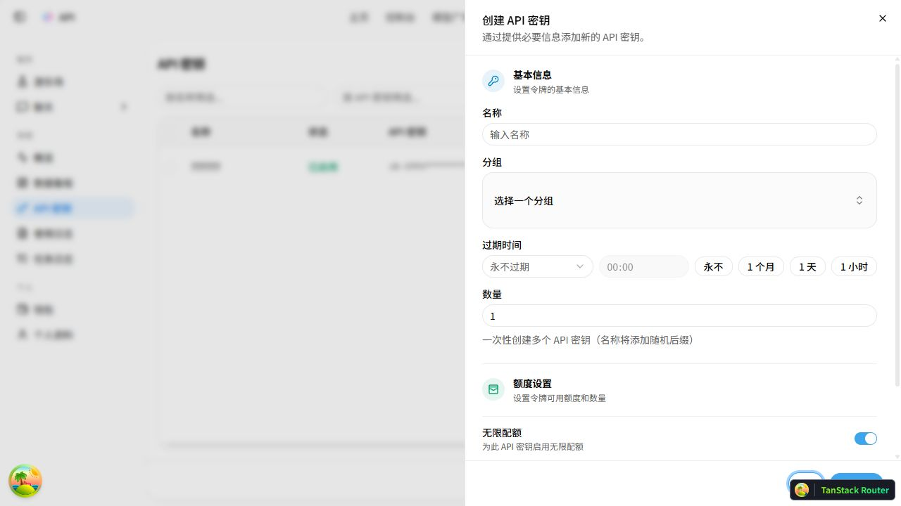
高级配置选项
按需配置以下选项：
| 配置项 | 说明 |
|---|---|
| 过期时间 | 设置有效期，留空或设为 -1 表示永不过期 |
| 剩余配额 | 限制该令牌可消耗的最大配额，超出后自动失效 |
| 无限配额 | 开启后不受配额限制（仍受账户总配额约束） |
| 模型限制 | 限定该令牌只能调用指定模型，留空表示不限制 |
| IP 白名单 | 限定允许使用该令牌的来源 IP，留空表示不限制 |
| 分组 | 指定该令牌使用的渠道分组 |
保存令牌 Key
点击「提交」，弹窗显示完整的令牌 Key，立即复制保存，关闭弹窗后无法再次查看完整 Key。
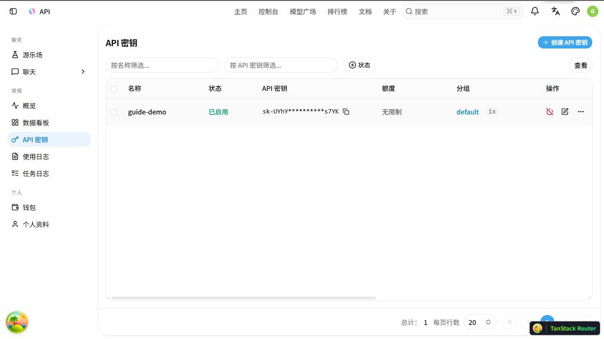
[!WARNING] 令牌 Key 仅在创建时完整显示一次，请立即复制保存。令牌 Key 具有完整的 API 调用权限，请勿泄露给他人，不要提交到代码仓库。
编辑令牌
在令牌列表中找到目标令牌，点击右侧「编辑」按钮，可修改令牌的配置选项（不包括令牌 Key 本身）。
删除令牌
在令牌列表中找到目标令牌，点击右侧「删除」按钮，确认后该令牌立即失效，无法恢复。
使用 API
将平台地址替换 OpenAI 的 base_url，使用平台颁发的令牌作为 api_key，即可开始调用。
操练场在线测试
操练场是内置的在线测试工具，无需编写代码即可直接与模型对话，适合快速验证令牌是否可用。
访问操练场
左侧导航点击「操练场」，或直接访问 /console/playground。
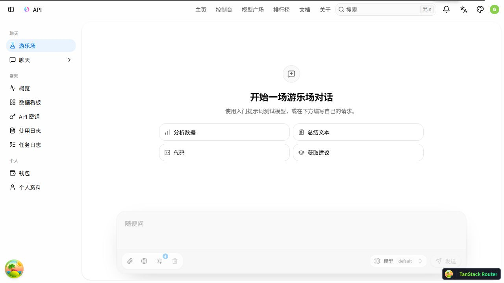
使用操练场
- 在左侧选择要测试的模型。
- 在底部输入框输入消息内容，点击发送。
- 右侧对话区域显示模型的回复结果。
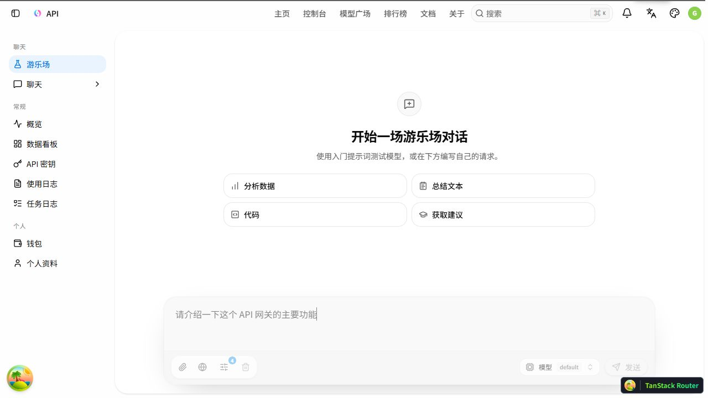
获取 API 地址
复制 API 地址
- 访问平台首页。
- 在页面中部找到 API Base URL 显示区域。
- 点击复制按钮，将地址复制到剪贴板。
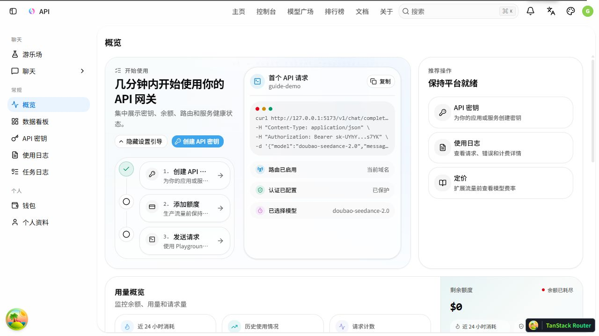
配置客户端
将复制的地址填入你的客户端或代码中作为 base_url，配合令牌即可开始调用。
代码示例
Python（OpenAI SDK）
from openai import OpenAI
client = OpenAI(
api_key="sk-xxxxxxxxxxxxxxxx", # 平台颁发的令牌
base_url="https://your-platform.com/v1"
)
response = client.chat.completions.create(
model="gpt-4o",
messages=[{"role": "user", "content": "Hello!"}]
)
print(response.choices[0].message.content)
Claude 原生格式
curl https://your-platform.com/v1/messages \
-H "x-api-key: sk-xxxxxxxx" \
-H "anthropic-version: 2023-06-01" \
-H "content-type: application/json" \
-d '{"model": "claude-3-5-sonnet-20241022", "max_tokens": 1024, "messages": [{"role": "user", "content": "Hello"}]}'
Gemini 原生格式
curl "https://your-platform.com/v1beta/models/gemini-1.5-pro:generateContent?key=sk-xxxxxxxx" \
-H "Content-Type: application/json" \
-d '{"contents": [{"parts": [{"text": "Hello"}]}]}'
支持的接口端点
| 接口 | 路径 | 说明 |
|---|---|---|
| 聊天补全 | POST /v1/chat/completions |
对话生成，支持流式输出 |
| 文本补全 | POST /v1/completions |
传统补全接口 |
| 向量嵌入 | POST /v1/embeddings |
文本向量化 |
| 图像生成 | POST /v1/images/generations |
文生图 |
| 图像编辑 | POST /v1/images/edits |
图像编辑 |
| 语音转文字 | POST /v1/audio/transcriptions |
Whisper 等 |
| 文字转语音 | POST /v1/audio/speech |
TTS |
| 重排序 | POST /v1/rerank |
文档重排序 |
| Responses API | POST /v1/responses |
OpenAI Responses 格式 |
| 实时对话 | GET /v1/realtime（WebSocket） |
OpenAI Realtime API |
| 模型列表 | GET /v1/models |
查询可用模型 |
聊天应用集成
New API 支持快速导入配置到多种 AI 聊天应用，方便测试和日常使用。
一键导入配置
在控制台→令牌页面可以一键导入配置到支持的聊天应用中。
使用方法
- 在令牌列表页找到要使用的令牌。
- 点击令牌右侧的「导入」或「配置」按钮。
- 选择目标聊天应用。
- 系统自动跳转到对应应用并填充配置信息。
ChatGPT Next Web
[!WARNING] ChatGPT Next Web 目前暂停部署。
Lobe Chat
[!NOTE] Lobe Chat 是一款开源的多模态对话应用，支持多种大语言模型（LLM）和插件扩展。它不仅可以实现文本对话，还支持图片、音频等多模态交互，适用于个人助理、知识问答、内容创作等多种场景。Lobe Chat 拥有简洁直观的界面，支持多端同步，用户可以根据需求自定义模型和插件，灵活扩展对话能力。无论是开发者还是普通用户，都能轻松上手，享受智能对话带来的高效体验。
[!WARNING] Lobe Chat 目前不支持从 New API 一键导入配置，需要手动填写。
配置步骤
- 打开 Lobe Chat 应用。
- 进入设置页面，找到「语言模型」配置区域。
- 按照以下信息填写配置：
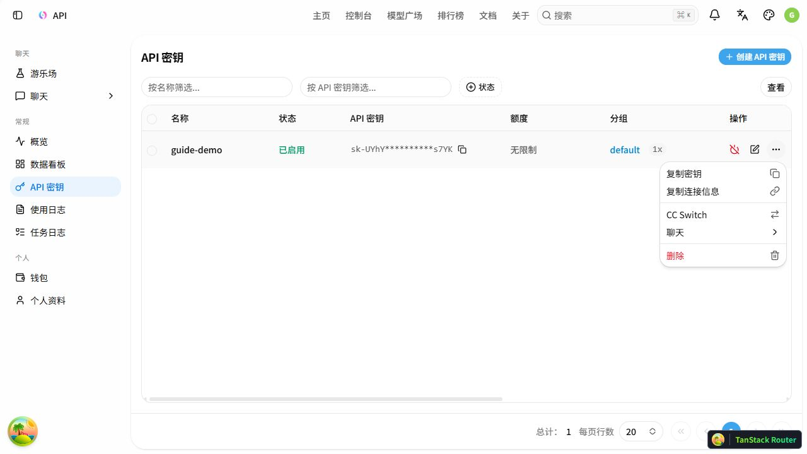
- API 地址：填写 New API 平台的 Base URL。
- API Key：填写在 New API 创建的令牌。
- 点击「保存」完成配置。
- 在模型选择中即可看到 New API 提供的所有可用模型。
AI as Workspace
[!NOTE] AI as Workspace 是一种将人工智能能力集成到工作空间中的创新方式。通过将 AI 助手与日常办公、协作、知识管理等场景深度结合，用户可以更高效地处理信息、自动化重复任务，并获得智能建议，提升整体工作效率和体验。
[!NOTE] 支持从 New API 一键导入配置。
使用方法
- 在 New API 令牌页面点击「导入到 AI as Workspace」。
- 系统自动跳转到 AI as Workspace 并填充配置。
- 确认配置信息后即可开始使用。
AMA 问天
[!NOTE] AMA 问天是 New API 提供的智能问答助手，支持多轮对话和复杂问题解答。用户可以通过自然语言与 AMA 问天进行交流，获取知识、技术支持或业务咨询，提升沟通效率和体验。
[!WARNING] 需要先安装 AMA 问天 app。
使用方法
- 从应用商店下载并安装 AMA 问天应用。
- 在 New API 令牌页面点击「导入到 AMA 问天」。
- 应用自动打开并完成配置。
- 开始与 AI 助手对话。
OpenCat
[!NOTE] OpenCat 是一款开源的多平台 AI 聊天客户端，支持多种大语言模型接入。用户可以通过简洁的界面与 AI 进行自然语言对话，适用于日常交流、知识问答和内容创作等多种场景。OpenCat 支持多端同步，配置灵活，适合个人和团队使用。
[!WARNING] 需要先安装 OpenCat app。
使用方法
- 从应用商店下载并安装 OpenCat 应用。
- 在 New API 令牌页面点击「导入到 OpenCat」。
- 应用自动打开并完成配置。
- 在 OpenCat 中选择模型开始对话。
手动配置其他应用
对于不支持一键导入的应用，可以手动配置。
配置信息
从 New API 获取以下信息：
| 配置项 | 说明 | 获取位置 |
|---|---|---|
| API Base URL | API 接口地址 | 平台首页或令牌页面 |
| API Key | 令牌密钥 | 创建令牌时显示（仅一次） |
| 可用模型 | 支持的模型列表 | 个人设置→可用模型或定价页面 |
通用配置步骤
- 在目标应用中找到「设置」或「配置」入口。
- 找到「自定义 API」或「OpenAI 兼容接口」配置区域。
- 填写 API Base URL 和 API Key。
- 保存配置后即可使用。
[!NOTE] 大多数支持 OpenAI API 的应用都可以通过填写自定义 API 地址的方式接入 New API。
定价
查看定价
访问定价页
点击左侧导航栏的「定价」，或直接访问 /pricing。
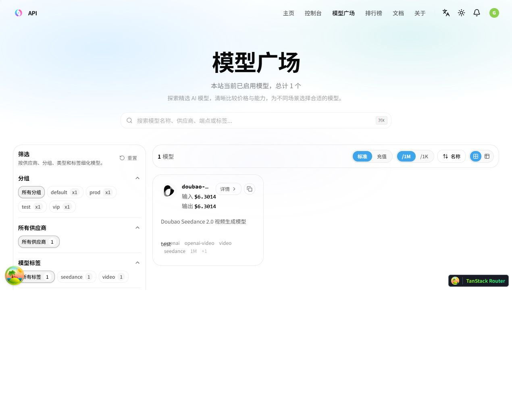
浏览模型价格
页面列出所有可用模型，每行显示模型名称、输入价格和输出价格。
搜索模型
可在页面顶部搜索框输入模型名称关键词，快速定位特定模型的价格。
价格说明
计费规则
- 输入价格：每 1K 输入 Token 消耗的配额。
- 输出价格：每 1K 输出 Token 消耗的配额。
- 实际消耗 = Token 数量 ÷ 1000 × 对应单价。
分组差异
不同分组的用户可能享有不同的计费倍率，具体以实际扣减为准，可在充值页查看当前余额变化。
使用记录
查看每次 API 调用的详细信息，支持按时间、模型、令牌等条件过滤。左侧导航点击「日志」，或直接访问 /console/log。普通用户只能看到自己的调用记录。
查看使用记录
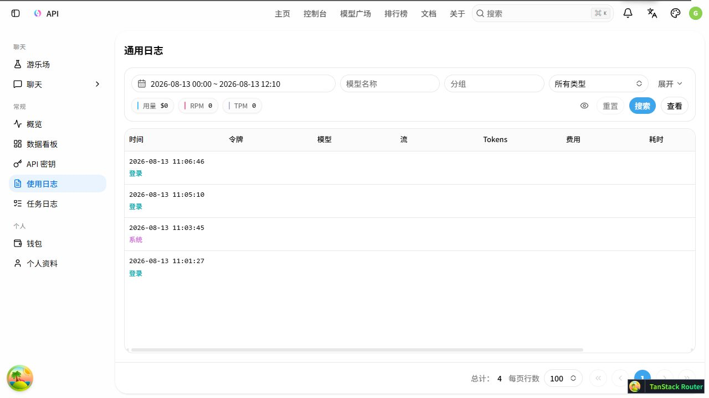
日志列表每行展示一次调用记录，包含调用时间、使用的模型、消耗的 Token 数量和配额、调用状态等信息。
搜索与过滤
设置过滤条件
- 在日志页顶部点击「筛选」按钮，展开过滤条件区域。
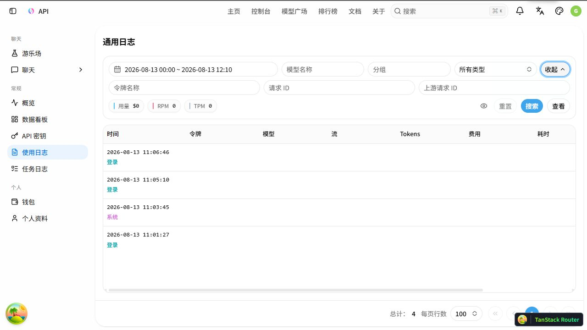
- 可设置以下过滤条件：
- 时间范围：选择开始和结束日期。
- 模型：输入模型名称关键词。
- 令牌名：选择或输入令牌名称。
查看过滤结果
设置完成后点击「查询」，列表自动刷新显示过滤结果。
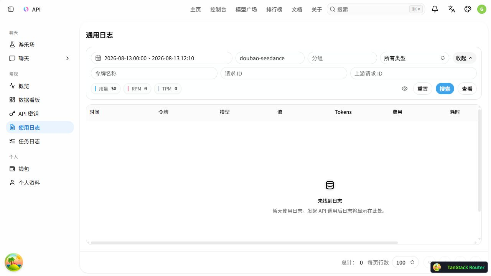
数据统计
访问数据看板
左侧导航点击「数据看板」，或直接访问 /console。
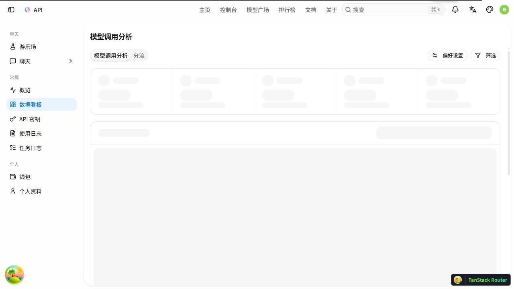
查看统计图表
数据看板页面以折线图或柱状图展示每日 API 调用量和配额消耗趋势。将鼠标悬停在图表上可查看具体日期的详细数据。
配额与充值
配额是平台内部计费单位，消耗量 = 实际 Token 数 × 模型倍率。左侧导航点击「钱包管理」，或直接访问 /console/topup。
充值方式
支持在线支付充值和兑换码两种方式增加账户配额。
| 充值方式 | 说明 |
|---|---|
| 兑换码 | 输入管理员生成的兑换码，直接增加配额 |
| EPay | 国内聚合支付（支付宝、微信等） |
| Stripe | 国际信用卡支付 |
| Creem / Waffo | 国际支付平台 |
在线支付充值
选择充值金额
在充值页选择充值金额，或手动输入自定义金额。
完成支付
- 选择支付方式（EPay / Stripe / Creem / Waffo）。
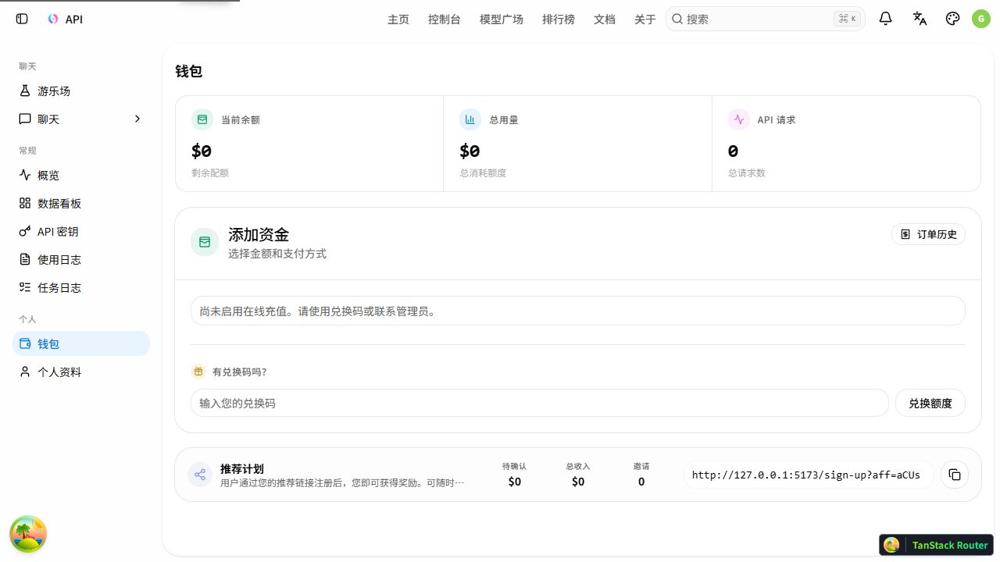
- 点击「充值」按钮，页面跳转至对应支付平台。
- 在支付平台完成付款后，自动跳回平台，账户余额更新。
兑换码充值
输入兑换码
- 在充值页找到「兑换码」输入区域。
- 在输入框中粘贴或输入管理员提供的兑换码。
完成兑换
- 点击「兑换」按钮，系统验证兑换码有效性。
- 兑换成功后页面提示获得的配额数量，账户余额同步更新。
邀请返利
每个账号都有唯一的邀请码，当其他人使用你的邀请码注册成功时，你即可获得邀请奖励。
获取邀请码
在充值页或个人设置页找到「邀请」区域，复制你的专属邀请码。
邀请奖励机制
- 注册即返利：被邀请人使用你的邀请码注册成功后，你（邀请人）会立即获得系统配置的一笔「邀请奖励配额」（一次性到账）。
- 转入主余额：点击「转入余额」按钮，即可将累计的返利配额转入你的账户主余额中进行使用。
任务管理
管理 Midjourney 绘图、Suno 音乐生成等异步任务的状态与结果。左侧导航点击「任务」，或直接访问 /console/task。
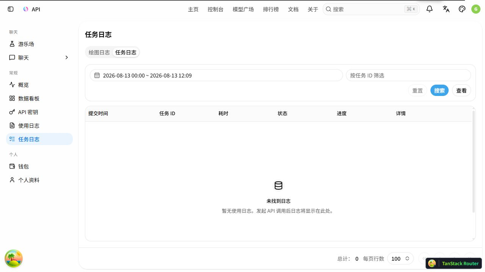
任务列表展示所有已提交的异步生成任务，包含任务 ID、类型、状态、提交时间和完成时间。
任务状态说明：
| 状态 | 说明 |
|---|---|
PENDING |
任务已提交，等待处理 |
IN_PROGRESS |
任务正在生成中 |
SUCCESS |
任务已完成，可查看结果 |
FAILURE |
任务生成失败，已自动退还配额 |